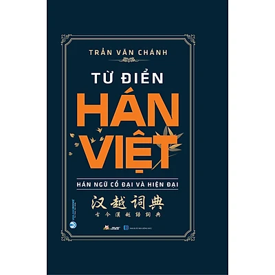

Tác giả: GS. Hoàng Phê
Số trang: 1492
Nhà xuất bản: Nhà Xuất Bản Hồng Đức
Loại bìa: Bìa cứng
Giá: 495.000đ
Tác giả: Shozo Shibuya
Số trang: 448
Nhà xuất bản: Nhà Xuất Bản Thế Giới
Loại bìa: Bìa mềm
Giá: 128.000đ
Tác giả: Huyền Linh
Số trang: 489
Nhà xuất bản: Nhà Xuất Bản Hồng Đức
Loại bìa: Bìa mềm
Giá: 51.000đ
Tác giả: Văn Lang Culture Jsc
Số trang: 800
Nhà xuất bản: Nhà Xuất Bản Hồng Đức
Loại bìa: Bìa mềm
Giá: 80.000đ
Tác giả: Thành Yến
Số trang: 972
Nhà xuất bản: Nhà Xuất Bản Dân Trí
Loại bìa: Bìa mềm
Giá: 55.000đ
Tác giả: Thành Yến
Số trang: 668
Nhà xuất bản: Nhà Xuất Bản Dân Trí
Loại bìa: Bìa mềm
Giá: 70.000đ
Tác giả: Bích Hằng
Số trang: 388
Nhà xuất bản: Nhà Xuất Bản Dân Trí
Loại bìa: Bìa mềm
Giá: 70.000đ
Tác giả: Bích Hằng
Số trang: 400
Nhà xuất bản: Nhà Xuất Bản Dân Trí
Loại bìa: Bìa mềm
Giá: 55.000đ
Tác giả: Bích Hằng
Số trang: 360
Nhà xuất bản: Nhà Xuất Bản Dân Trí
Loại bìa: Bìa mềm
Giá: 60.000đ
Tác giả: Bích Hằng
Số trang: 372
Nhà xuất bản: Nhà Xuất Bản Dân Trí
Loại bìa: Bìa mềm
Giá: 60.000đ
Tác giả: Hoàng Tuấn Công
Số trang: 500
Nhà xuất bản: Nhà Xuất Bản Hội Nhà Văni
Loại bìa: Bìa mềm
Giá: 290.000đ
Tác giả: Lại Nguyên Ân, Bùi Văn Trọng Cường
Số trang: 988
Nhà xuất bản: Nhà Xuất Bản Văn Học
Loại bìa: Bìa mềm
Giá: 188.000đ
Tác giả: Nguyễn Q. Thắng - Nguyễn Bá Thế
Số trang: 1690
Nhà xuất bản: Nhà Xuất Bản Văn Hoá Thông Tin
Loại bìa: Bìa cứng
Giá: 380.000đ
Tác giả: Nguyễn Anh Vinh
Số trang: 1598
Nhà xuất bản: Nhà Xuất Bản Thời Đại
Loại bìa: Bìa mềm
Giá: 495.000đ
Tác giả: Phạm Lê Liên chủ biên (Nhóm Việt Ngữ)
Số trang: 1119
Nhà xuất bản: Nhà Xuất Bản Hồng Đức
Loại bìa: Bìa cứng
Giá: 220.000đ
Tác giả: Nguyễn Tôn Nhan
Số trang: 356
Nhà xuất bản: Nhà Xuất Bản Hồng Đức
Loại bìa: Bìa mềm
Giá: 78.000đ
Tác giả: G.S Nguyễn Lân, Vũ Ngọc Phan
Nhà xuất bản: Nhà Xuất Bản Văn Học
Loại bìa: Bìa cứng
Giá: 264.000đ
Tác giả: Trần Văn Chánh
Số trang: 2632
Nhà xuất bản: Nhà Xuất Bản Hồng Đức
Loại bìa: Bìa cứng
Giá: 790.000đ
Tác giả: Văn Lang Culture Jsc
Số trang: 512
Nhà xuất bản: Nhà Xuất Bản Thanh Hóa
Loại bìa: Bìa mềm
Giá: 65.000đ
Tác giả: Gs Hoàng Phê
Số trang: 1522
Nhà xuất bản: Nhà Xuất Bản Từ Điển Bách Khoa
Loại bìa: Bìa cứng
Giá: 350.000đ